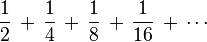
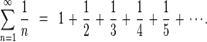

1. Write a Python program to
calculate the sum of a list of numbers.
Click me to see the sample solution
2. Write a
Python program to converting an Integer to a string in any base.
Click me to see the sample solution
3. Write a
Python program of recursion list sum.
Test Data: [1, 2, [3,4], [5,6]]
Expected Result: 21
Click me to see the sample solution
4. Write a
Python program to get the factorial of a non-negative integer.
Click me to see the sample solution
5. Write a
Python program to solve the Fibonacci sequence using recursion.
Click me to see the sample solution
6. Write a
Python program to get the sum of a non-negative integer.
Test Data:
sumDigits(345) -> 12
sumDigits(45) -> 9
Click me to see the sample solution
7. Write a
Python program to calculate the sum of the positive integers of
n+(n-2)+(n-4)... (until n-x =< 0).
Test Data:
sum_series(6) -> 12
sum_series(10) -> 30
Click me to see the sample solution
8. Write a
Python program to calculate the harmonic sum of n-1.
Note: The
harmonic sum is the sum of reciprocals of the positive integers.
Example :

Click me to see the sample solution
9. Write a
Python program to calculate the geometric sum of n-1.
Note: In
mathematics, a geometric series is a series with a constant ratio between
successive terms.
Example :

Click me to see the sample solution
10. Write a
Python program to calculate the value of 'a' to the power 'b'.
Test Data :
(power(3,4) -> 81
Click me to see the sample solution
11. Write a
Python program to find the greatest common divisor (gcd) of two
integers.
Click me to see the sample solution